Module 1: Introduction to FHIR and the Patient Resource
Welcome to this hands-on FHIR tutorial! By the end of this guide, you'll be able to create, read, update, and search Patient resources using the HAPI FHIR test server.
1.1 What is FHIR and Why It Matters
FHIR (Fast Healthcare Interoperability Resources) is the modern standard for exchanging healthcare information electronically.
Unlike older standards that were difficult to implement, FHIR uses familiar web technologies (REST, JSON, HTTP) making it accessible to developers.
The Patient resource represents the demographic and administrative information about individuals receiving care.
It's the foundation for clinical workflows—almost every other FHIR resource (Observation, Medication, Appointment) references a Patient.
1.2 Anatomy of a Patient Resource
A Patient resource is represented as a JSON object with a well-defined structure:
💡 Note: Cardinality notation: 0..1 means optional (0 or 1), 0..* means optional and repeating (0 or more), 1..1 means required.
Module 2: Setting Up Your Environment
Before we start working with FHIR resources, select your test server, download the pre-configured Postman collection, and you're ready to go.
2.1 Select Your FHIR Test Server
Choose the server you want to use for this tutorial. Your selection will apply to all interactive exercises and Postman downloads.
2.2 Your Selected Server Details
You're using the following test server for all exercises in this tutorial:
Property
Value
Server
HAPI FHIR
Base URL
https://hapi.fhir.org/baseR4
Patient Endpoint
https://hapi.fhir.org/baseR4/Patient
Authentication
None required (public server)
CORS
Fully enabled for browser-based requests
FHIR Version
R4 (4.0.1)
⚠️ Important: This is a public test server. Never store real patient data. The server is periodically purged—your test data may disappear without notice. If you receive 429 or 5xx errors, wait a minute and retry.
2.3 Download Pre-configured Postman Collection
Recommended
Import and go—no manual setup
Download our ready-to-use Postman collection with all requests, headers, environment
variables, and test scripts pre-configured for your selected server. Import and go—no manual setup needed.
Click Import button (top-left) or press Ctrl+O / Cmd+O
Drag and drop both downloaded files, or click "Upload Files" and select them
Click Import to confirm
Select the "FHIR Tutorial" environment from the dropdown (top-right corner)
You're ready! Start with "1. CREATE Patient" request
Successful Import Confirmation
After importing both files, your Postman workspace should look like this:
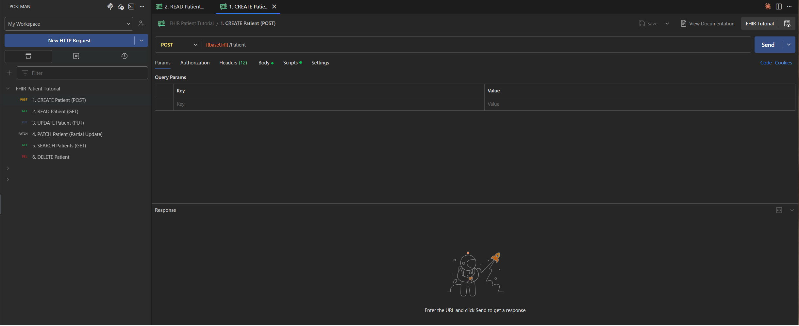
You should see the FHIR Patient Tutorial collection in your left sidebar with all 6 requests
(CREATE, READ, UPDATE, PATCH, SEARCH, DELETE), and the FHIR Tutorial environment should be
selected in the top-right dropdown. Your Postman is now ready to use for the exercises in this tutorial.
FHIR headers — Content-Type and Accept headers pre-configured
Environment variables — baseUrl and patientId ready to use
Auto-capture scripts — Patient ID automatically saved after creation
Example payloads — Valid JSON bodies for POST, PUT, and PATCH requests
Validation tests — Response validation built into each request
Module 3: Creating a Patient (POST)
Let's start by learning how to create new Patient resources in FHIR. This is the foundation for all other operations—once you have a patient, you can read, update, search, and delete it.
3.1 Understanding the CREATE Operation
To create a new patient, you send an HTTP POST request with the Patient resource in the request body. The server will assign a unique ID and return the created resource.
3.2 Try It Yourself: Create a Patient
Use the interactive form below to create a patient on your selected FHIR test server. This will generate a real Patient ID that you'll use in subsequent modules.
Try It: Create a Patient
Enter patient details and click "Create Patient"
💡 Tip: Save the Patient ID from your created patient! You'll need it for Module 4 (Reading) and Module 5 (Advanced Operations).
3.3 Creating a Patient in Postman
Now let's use the pre-configured Postman collection from Module 2 to create a patient. All headers and settings are already configured for you.
Step 1: Open the CREATE Patient Request
In your Postman workspace, navigate to the FHIR Patient Tutorial collection and select "1. CREATE Patient (POST)".
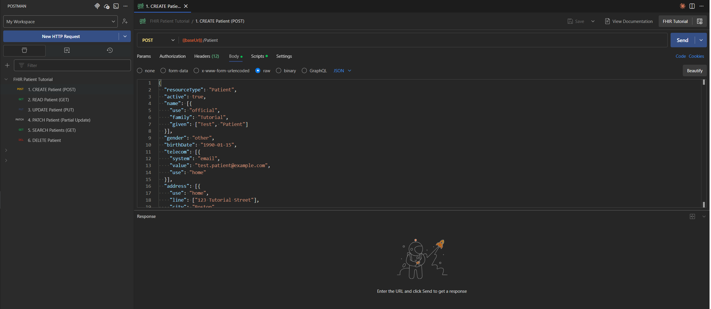
Notice that the request is already configured with:
Click the "Send" button in Postman. The collection includes a script that automatically captures the Patient ID and saves it to your environment variable for use in subsequent requests.
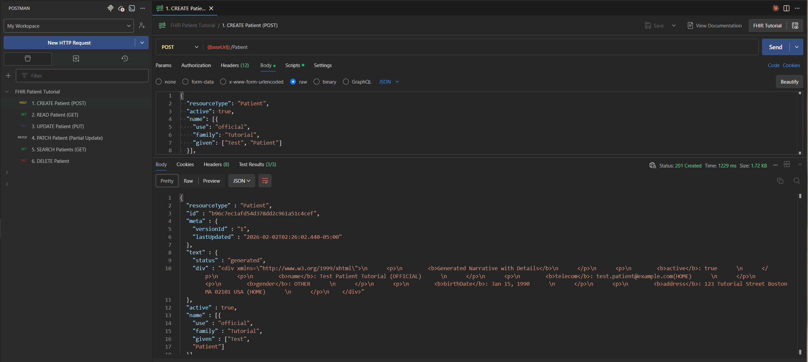
You should receive a response like this:
Expected Response (201 Created)
HTTP/1.1 201 Created
Location: https://hapi.fhir.org/baseR4/Patient/12345/_history/1
ETag: W/"1"
The Location header contains your new Patient's URL. Extract the Patient ID (e.g., 12345) from this URL—you'll need it for subsequent operations.
The response body will contain the complete Patient resource with the server-assigned ID and metadata.
💡 Note: The HAPI FHIR test server automatically generates the Patient ID. You cannot specify your own ID in a POST request—use PUT for that (covered in Module 5).
Module 4: Reading Patient Data (GET)
Now that you've created a patient in Module 3, let's learn how to retrieve Patient resources using GET requests. This is the most fundamental read operation in FHIR.
4.1 Reading a Patient by ID in Postman
Now let's use the pre-configured READ request to fetch the patient you created in Module 3. The Patient ID was automatically saved to your environment, so you don't need to manually enter it.
Step 1: Open the READ Patient Request
In your Postman workspace, select "2. READ Patient (GET)" from the FHIR Patient Tutorial collection.
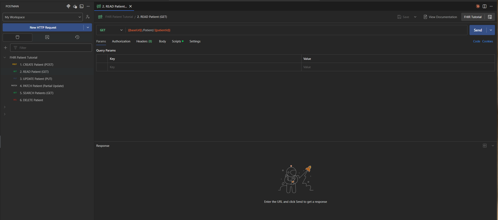
Notice that the URL uses {{baseUrl}}/Patient/{{patientId}}. The {{patientId}} variable was automatically populated when you created a patient in Module 3.
Step 2: Send the Request
Click the "Send" button. If the patient exists, you'll receive a 200 OK response with the complete Patient resource.
Expected Response (200 OK)
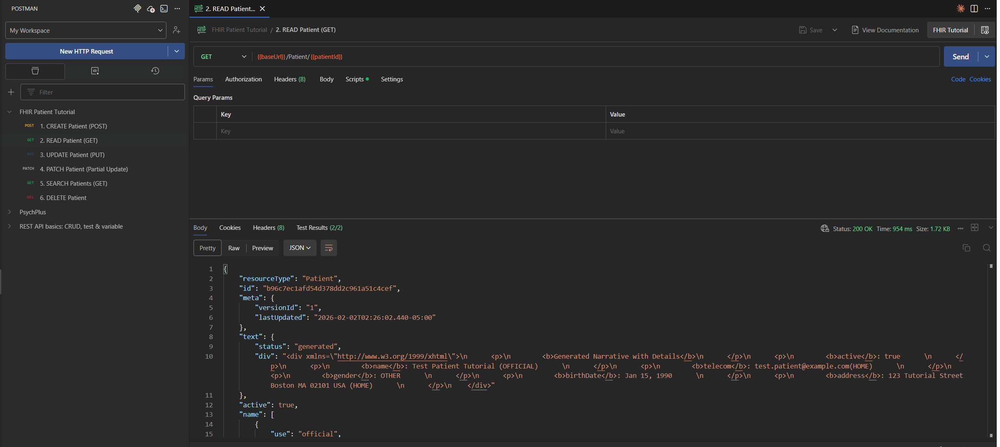
The response will contain the complete Patient resource:
Try these exercises in Postman to reinforce your understanding:
Read your patient: Use the ID from the patient you created in Module 3
Test error handling: Try reading a non-existent ID like 999999999
Examine metadata: Check the meta.versionId and meta.lastUpdated fields
Read a test patient: Try fetching Patient/592912 (a sample patient on the HAPI server)
💡 Note: The HAPI FHIR test server periodically purges old data. If your patient from Module 3 no longer exists, simply create a new one and use that ID.
Beyond creating and reading, FHIR supports updating and deleting Patient resources. In this module, you'll learn how to modify existing patients using PUT and PATCH, and how to remove patients using DELETE.
5.1 UPDATE: Full Resource Replacement (PUT)
Critical concept: PUT performs full resource replacement. You must include all fields you want to retain—any fields omitted will be deleted from the resource.
When to Use PUT
You want to replace the entire Patient resource with a new version
You have the complete, updated Patient object available
You need to remove multiple fields at once
Step 1: Open the UPDATE Patient Request
In your Postman workspace, select "3. UPDATE Patient (PUT)" from the FHIR Patient Tutorial collection.
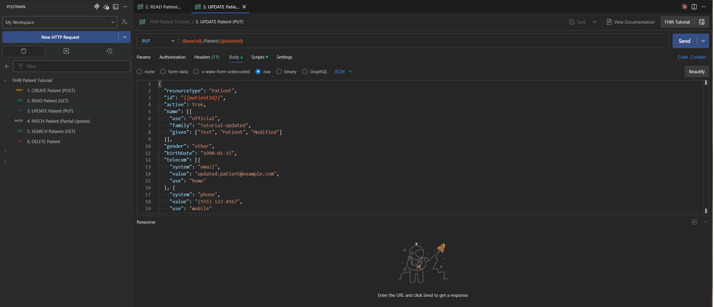
The request is pre-configured with:
Method: PUT
URL:{{baseUrl}}/Patient/{{patientId}} (automatically uses your created patient)
Headers: Already set to application/fhir+json
Step 2: Modify the Request Body
The collection includes a complete Patient resource. Update the fields you want to change. Remember: The id in the JSON must match your Patient ID.
Click "Send". Expected response: 200 OK or 201 Created (if the ID didn't exist previously).
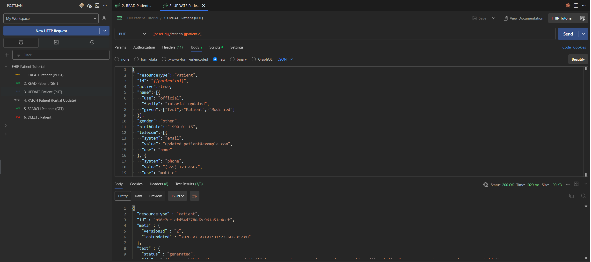
⚠️ Warning: Any fields omitted from a PUT request will be deleted from the resource. In the example above, if the original patient had telecom (phone/email) data, it would be removed because it's not included in the PUT body. If you only need to change specific fields, use PATCH instead.
5.2 PATCH: Partial Updates (JSON Patch)
PATCH allows you to modify specific fields without sending the entire resource. This is safer and more efficient than PUT when you only need to change one or two fields.
When to Use PATCH
You want to update only specific fields (e.g., add a phone number, change birthdate)
You want to avoid the risk of accidentally deleting fields
You're making targeted modifications to large resources
Step 1: Open the PATCH Patient Request
In your Postman workspace, select "4. PATCH Patient (Partial Update)" from the FHIR Patient Tutorial collection.
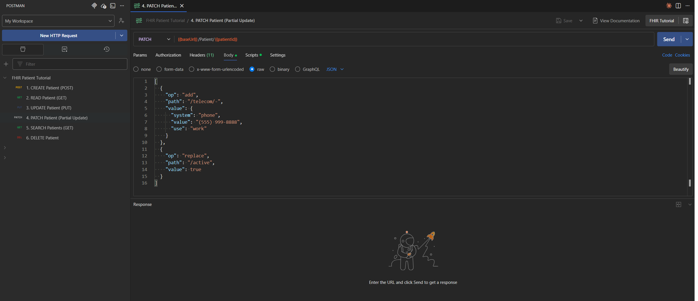
The request is pre-configured with:
Method: PATCH
URL:{{baseUrl}}/Patient/{{patientId}}
Content-Type:application/json-patch+json (note the different content type!)
Step 2: Customize the JSON Patch Operations
The collection includes example PATCH operations. PATCH uses a special JSON Patch format (RFC 6902). Here are common operations you can use:
Example: Add a Phone Number
This adds a new phone number to the telecom array:
Click "Send". Expected response: 200 OK with the updated Patient resource.
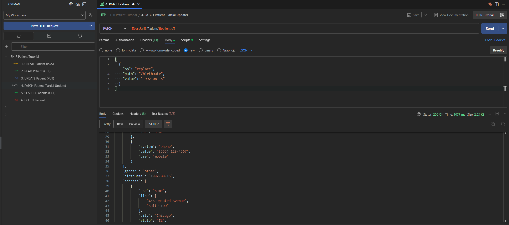
💡 Tip: JSON Patch operations are applied in order. If one operation fails, the entire PATCH request fails, and no changes are made (atomic transaction).
5.3 DELETE: Removing a Patient
The DELETE operation removes a Patient resource from the server. HAPI FHIR performs a "soft delete" by default, meaning the resource is marked as deleted but preserved in the version history.
Step 1: Open the DELETE Patient Request
In your Postman workspace, select "6. DELETE Patient" from the FHIR Patient Tutorial collection.
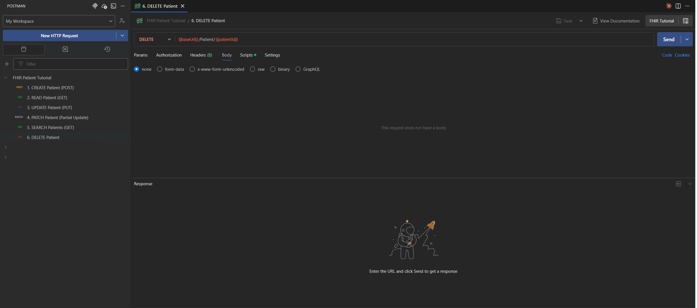
The request is pre-configured with:
Method: DELETE
URL:{{baseUrl}}/Patient/{{patientId}}
Step 2: Send the Request
Click "Send". No request body is needed for DELETE operations.
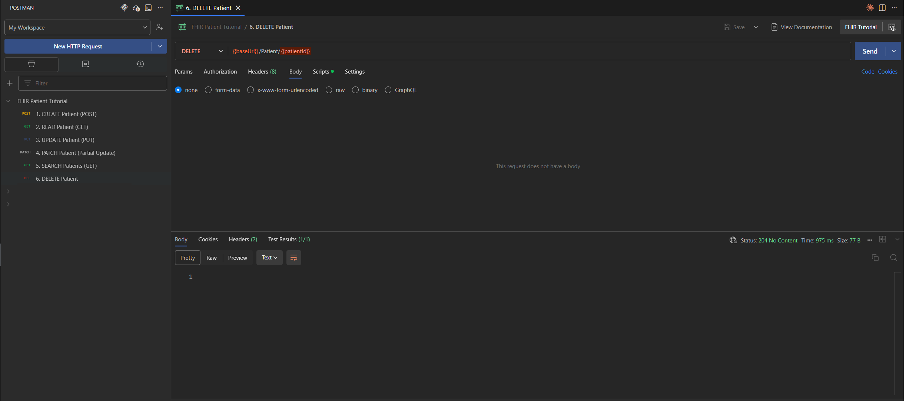
Expected Responses
200 OK - Success with OperationOutcome in body
204 No Content - Success with no response body
404 Not Found - Patient ID doesn't exist
409 Conflict - Other resources reference this Patient (referential integrity violation)
Example OperationOutcome for Successful Delete (200 OK)
GET requests return 410 Gone with an OperationOutcome
The resource is still accessible via version history (e.g., /Patient/12345/_history/1)
Search queries will not return the deleted patient
💡 Tip: HAPI FHIR's soft delete preserves data for audit and compliance purposes. Reading a deleted resource returns 410 Gone, not 404 Not Found.
5.4 Practice Exercises
Reinforce your learning with these exercises:
Update with PUT: Read the patient from Module 3, modify the JSON, and send a PUT request to update it
Add contact info with PATCH: Use PATCH to add a phone number or email without replacing the entire resource
Test PATCH operations: Try replace, add, and remove operations on different fields
Delete a patient: Create a test patient, then delete it and verify you get 410 Gone when trying to read it
⚠️ Warning: Always be cautious with PUT and DELETE operations in production environments. Consider implementing confirmation prompts and audit logging for these operations.
Module 6: Search Operations
FHIR's powerful search capabilities let you find patients based on demographics, identifiers, and other criteria. Let's use the pre-configured SEARCH request to explore these capabilities.
6.1 Using the SEARCH Request in Postman
Open the "5. SEARCH Patients (GET)" request from your FHIR Patient Tutorial collection.
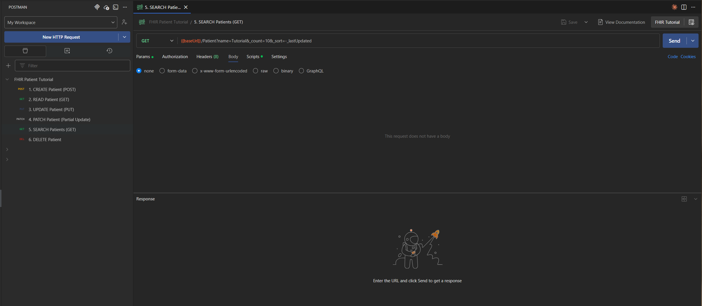
The SEARCH request uses query parameters to filter results. You can modify the parameters in the "Params" tab to customize your search.
6.2 Search Parameter Reference
Here are the most commonly used search parameters for Patient resources:
Parameter
Type
Example
Description
_id
token
?_id=12345
Logical resource ID
name
string
?name=smith
Any part of name (case-insensitive)
family
string
?family=Martinez
Family name only
given
string
?given=Carlos
Given name only
birthdate
date
?birthdate=1992-07-14
Exact date
birthdate
date
?birthdate=gt1990-01-01
After date (gt, lt, ge, le)
gender
token
?gender=male
Administrative gender
identifier
token
?identifier=http://hospital.org/mrn|12345
System and value (pipe character)
phone
token
?phone=555-1234
Phone number
email
token
?email=test@example.com
Email address
address
string
?address=Boston
Any address field
address-city
string
?address-city=Chicago
City specifically
active
token
?active=true
Record status
💡 Note: When using the identifier parameter with system and value, the pipe character (|) must be URL-encoded as %7C in actual HTTP requests.
6.3 Combining Search Parameters
💡 Tip: In the Postman collection's SEARCH request, you can easily add, remove, or modify query parameters using the "Params" tab. Just check/uncheck parameters or change their values without editing the URL directly.
AND Logic (all conditions must match)
Separate parameters with &:
GET /Patient?family=Martinez&gender=male&birthdate=gt1990-01-01
OR Logic (any condition can match)
Use comma-separated values within a single parameter:
GET /Patient?gender=male,female
GET /Patient?address-state=IL,MA,NY
Date Ranges
Combine greater-than and less-than prefixes:
GET /Patient?birthdate=ge1980-01-01&birthdate=le1990-12-31
Date prefix operators:
eq - Equal (default if no prefix)
gt - Greater than
ge - Greater than or equal
lt - Less than
le - Less than or equal
6.4 Pagination and Sorting
Limit Results with _count
GET /Patient?name=smith&_count=10
Sort Results with _sort
GET /Patient?_count=20&_sort=family
GET /Patient?_count=20&_sort=-birthdate # Descending (newest first)
Use a minus sign (-) prefix for descending order.
6.5 Understanding Bundle Responses
When you send a SEARCH request, results are returned as a Bundle resource containing matched entries: